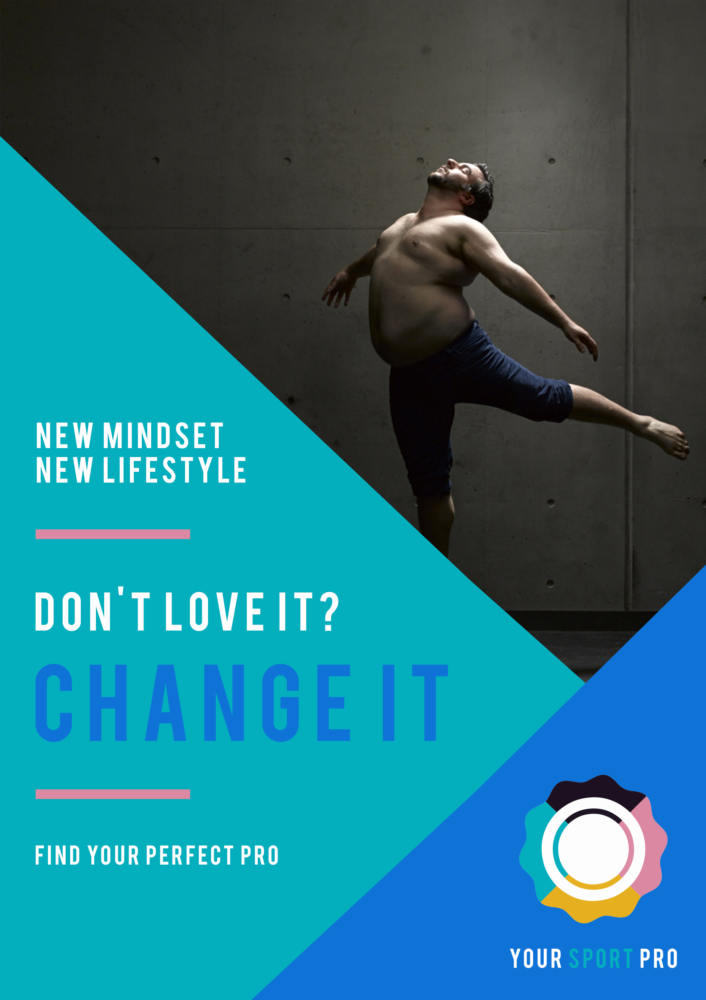
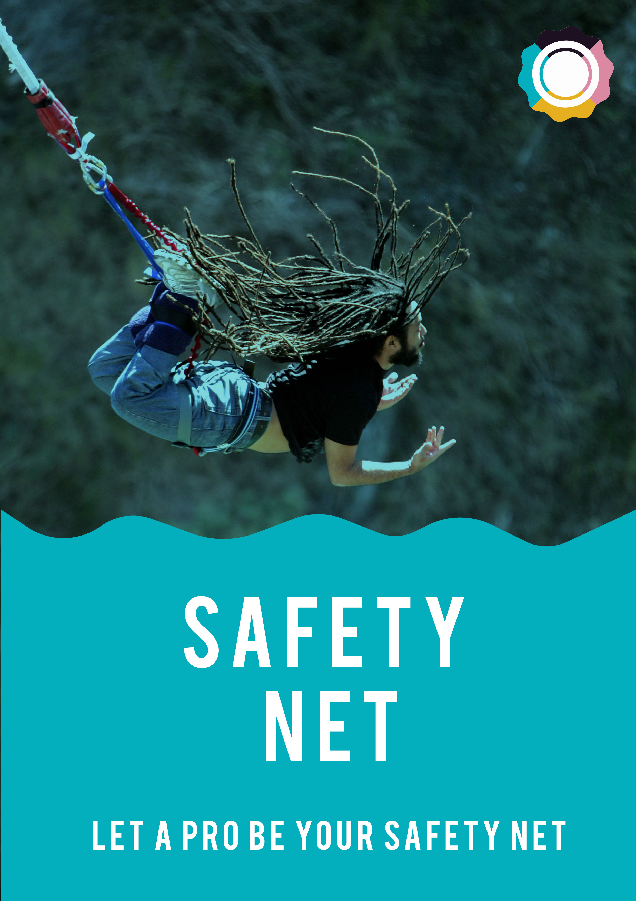
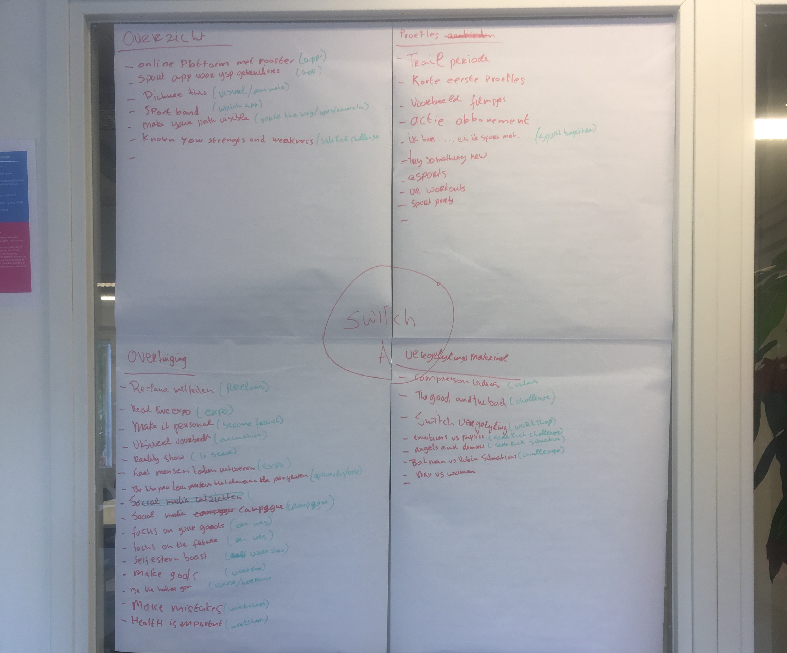
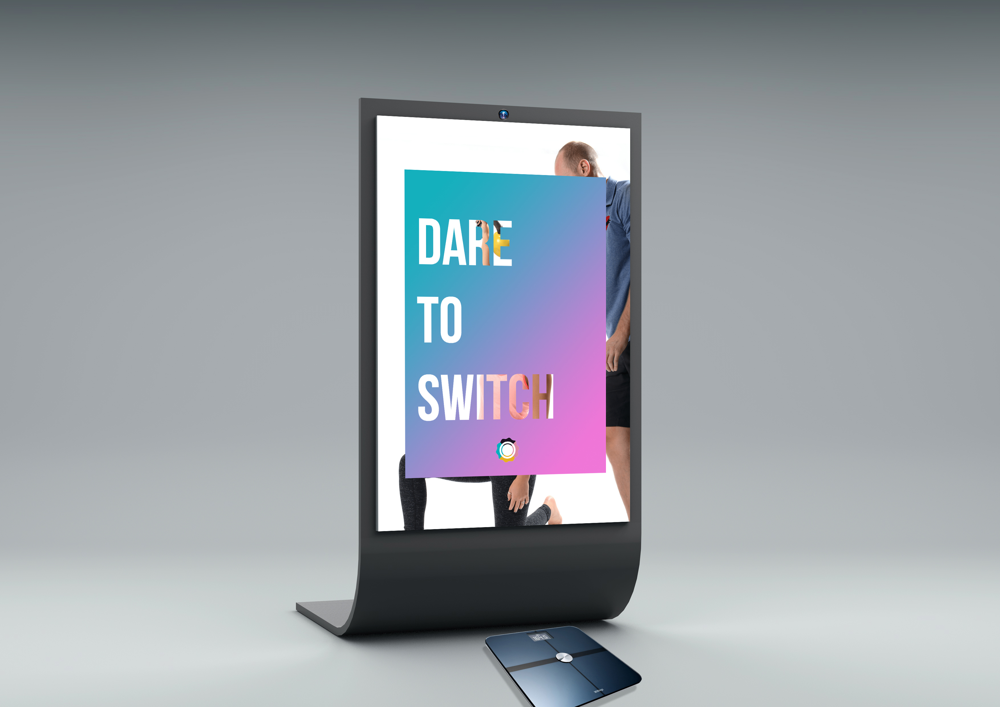
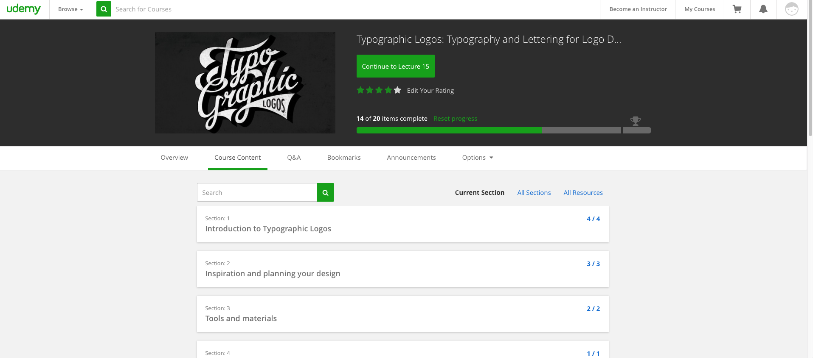
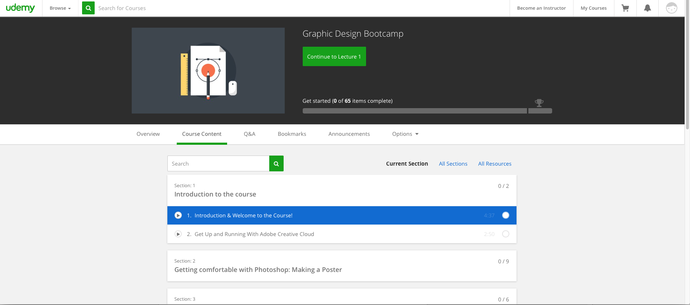

Hier kunt u mijn keuzes en werkzaamheden voor het leerdoel SCO terug lezen voor de activatie campagne voor YourSportPro.
In week 2 zijn we met zijn allen begonnen met brainstormen, om wederom 5 concepten op te kunnen leveren. We zijn hier heel de maandag mee bezig geweest en aan het einde van die dag hadden we al een aantal goede concept ideeën. Deze concepten zijn we verder visueel en tekstueel gaan uitwerken. We zijn begonnen met onderzoek doen naar de doelgroep. Hiervoor hebben wij een enquete opgezet waar we in 2 dagen al meer reacties op hadden dan YSP in totaal aan aanvragen heeft gehad. Dus dat is een mooie basis om mee te werken. Daarnaast hebben we een aantal vragen gesteld aan Freshheads en we verwachten daar nog antwoord op te krijgen.
Week 4
In week 3 zijn we met zijn allen begonnen met brainstormen, om wederom 5 concepten op te kunnen leveren. We zijn hier heel de maandag mee bezig geweest en aan het einde van die dag hadden we al een aantal goede concept ideeen. Deze concepten zijn we verder visueel en textueel gaan uitwerken. Van de uiteindelijke 15 concepten hebben we er 4 uitgekozen om die verder uit te werken. Voor deze 4 uitgewerkte concepten hebben we nieuwe visuals gemaakt.
Week 5
In week 4 zijn we maandag begonnen met het voorbereiden voor een presentatie. De presentatie die we voor de klant volgende week gaan houden hebben we eerst voor de docenten gedaan. Na de presentatie kregen we feedback op de concepten. Door de feedback die we daarop gekregen hebben, zijn we de concepten gaan aanpassen en verbeteren.
Week 6
Deze week hebben we ons voorbereid op presentatie die we op dinsdag 21 maart aan Freshheads moeten geven.Na de presentatie gingen we de concepten verbeteren aan de hand van de feedback. De feedback was erg positief. De rest van de week hebben we het concept verbeterd, user stories gemaakt ons voorbereid op scrum, waar we volgende week mee gaan beginnen.
Week 7
Op maandag beginnen met scrum. Het is de eerste keer dat we dit doen, dus daarom hebben we begeleiding nodig om hiermee op te starten. User stories gaan we bedenken om het concept beter uit te werken. Waarmee we vervolgens de backlog kunnen vullen en kunnen bepalen wat de sprint backlog word. Zo kunnen we een prioriteiten lijst opstellen.
Week 8
Maandag zijn we goed van start gegaan met scrum. Vorige week was een oefenweek waar we keken hoe het precies werkte en of we het goed aan het doen waren. Verder deden we op maandag brainstormen over de verschillende user stories die we voor deze sprint gepland hadden. De brainstorm sessies deden we om ideeën te bedenken voor ons concept Switch.
Week 9
Deze week gingen we de ideeën uitwerken om de week daarop te presenteren. We hadden 3 ideeën uitgewerkt met product omschrijving, visuals en prototypes. Later in de week hadden we een presentatie gemaakt waar alles in komt te staan. Ik heb verder visuals uitgewerkt deze week voor onze presentatie.
Reflectie
Voor semester 4 moesten ik samen met me proftaak groep een activatie campagne bedenken voor YourSportPro. “Bedenk een digitaal gefocuste activatie strategie die gericht is op de sporter om conversie op het Your Sport Pro platform te stimuleren.” Dit is het eerste keer dat ik een actieve campagne bedenken voor een platform. Verder is het ook het eerste keer dat een heel semester gebaseerd is op een proftaak. Verder wist ik niet wat ik van SCO moest verwachten behalve heel veel concepting. Your Sport Pro heeft 2016 gebruikt om professionals te binden aan hun platform. In 2017 willen ze meer interactie op de website tussen consument en professionals. De werkzaamheden moet ik samen met een groep uitvoeren. Ik ga samen met mijn groep in 16 weken ervoor zorgen dat er meer interactie ontstaat op de website, tussen consument en professional door middel van een digitaal gefocuste activatie strategie.
Ik ben tevreden met hoe concepten gedeelte ging voor YourSportPro. We hebben gezamenlijk brainstormsessies gehad waar we verschillende methodes en technieken gebruikt zoals longlist, shortlist, superheld en mind maps. We hebben ook veel onderzoek gedaan om tot een passend concept te komen. Hierbij hebben technieken als triangulatie gebruikt om vanuit meerdere onderzoekmethode een beter resultaat te krijgen. Verder was ik voornamelijk bezig met het design gedeelte. Ik heb poster ontworpen. Voor poster heb ik verschillende technieken gebruikt om zo creatief mogelijk bezig te zijn. Verder heb ik ook storyboards gemaakt om een beter verhaal te vertellen en om te kijken hoe wij het interactie met de gebruiker willen overbrengen.
Workshops voor SCO waren ook interessant en leuk om jezelf uit te dagen om posters met semiotiek te maken of meer in de theorie van concepten en marketing te duiken om te kijken en leren hoe het moet. Verder voor ik het gedeelte van mediastrategie en sociaal media kalender maken ook interessant. Allebei waren een grote discussie punt bij ons in de proftaak omdat iedereen wel sociaal media gebruiken en iedereen uit zichzelf anders op sociaal media. Maar het was wel leerzaam om samen met een docent te kijken wat het beste past bij onze campagne. Ik wil persoonlijk meer workshops van Pieter omdat voor het gedeelte SCO is er nog veel te leren en ik ben erg interesseert in deze onderdeel. Voor de semiotiek workshop wist ik helemaal niet dat iets als semiotiek bestond. Ik dacht altijd dat bv een James Bond poster een bepaalde stijl was. Maar daar komt semiotiek binnen. Dat je met een bepaalde kleur, symbool en stijl het semiotisch aspect van een poster of brand bepaald. Nu vind ik het leuk om naar film posters te kijken om te kijken welke semiotisch aspect ze gebruiken kleur, symbool ect.
Verder ben ik een stap verder gekomen met concepting dat het nu iets beter loopt. Ik volg nu een bepaald patroon om te concepting. Ik begin meestal met een mind map, daarna gebruik ik de superheld methode om iets dieper te gaan. Nadat ik een lijst potentieel ideeën/concepten heb ga ik een selectie maken en vragen aan mezelf stellen om te kijken om deze het best past bij mijn probleemstelling. Zo gaat mijn concepting fase iets beter. Ik weet ook wat het verschil is tussen een idee en een concept en dat maakt mijn concepting fase iets makkelijker. Van mijn brainstormsessie is onze weegschaal idee voor de proftaak gekomen. Ik ben op het idee gekomen van een TNT-reclame “press for drama”. Ik ben verder naar guerilla acties gaan kijken om meer een idee te krijgen hoe ze tot stand komen en hoe kan je uitvoeren. Ik heb verschillende video gekeken. Na onderzoek heb ik en TJebbe een document opgesteld waar wij de diepgang van de actie bepalen en ook met het concept. Dat was ook een gedeelte meedenken en “concepting” wat onze vraag was hoe willen wij de doelgroepen pakken, inspireren en ook motiveren. Het moest op een manier gebeuren dat niet agressief overkwam. Dus we hebben verschillende uitingen gepakt om te kijken welke het best was. We kwam uiteindelijk op het vieren dat je durf om op de weegschaal te staan. Voor eerste hebben we een aantal storyboards gemaakt en ook flowcharts om te kijken hoe onze doelgroep/persona’s in aanraking komen met de weegschaal. Dat wij onze persona’s op het juiste moment te pakken krijgen. Zo hebben we het idee uitgewerkt tot een prototype belevenis.
SCO Workshop
YSP Posters
Semiotic posters
Process document
Eigen Leerdoelen
Ik wil beter worden in typografie dus ik ben momenteel bezig met een cursus typografie op udemy om scherper te worden bij het gebruiken van woorden en ook hoe je met woorden creatief kan omgaan.
Ik ben ook met een graphic design bootcamp begonnen om mezelf scherp te houden wanneer ik communicatie producten moet ontwerpen zoals posters, flyers ect. zo hou ik mezelf scherp en kan ik ook meer gericht werken aan mijn leerdoelen.
Verder uitwerking van de posters kunt uw terug vinden in mijn artikel design.